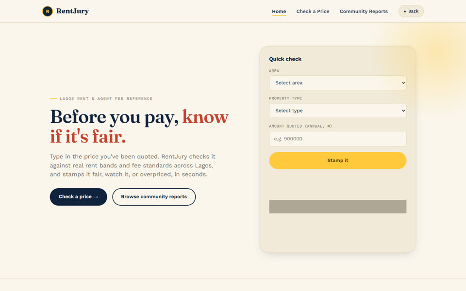
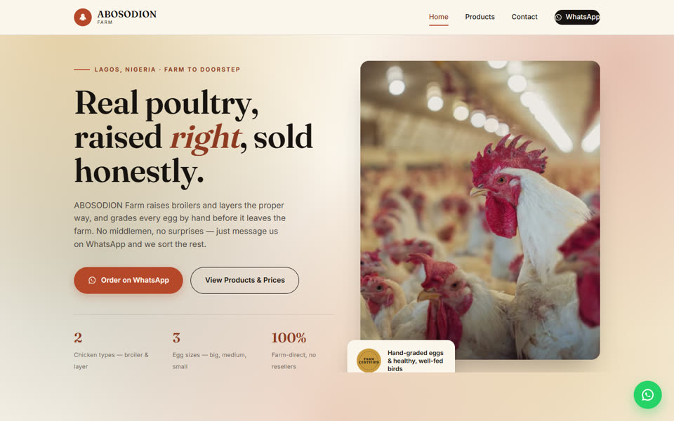
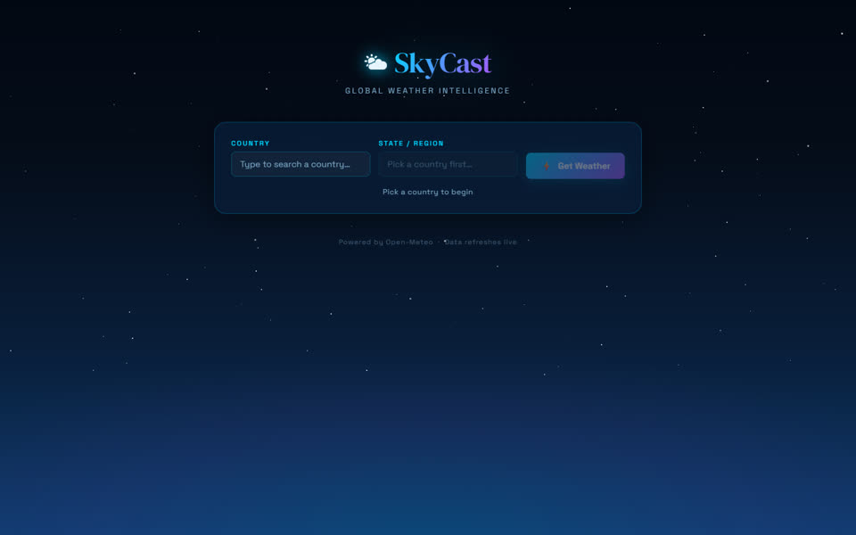
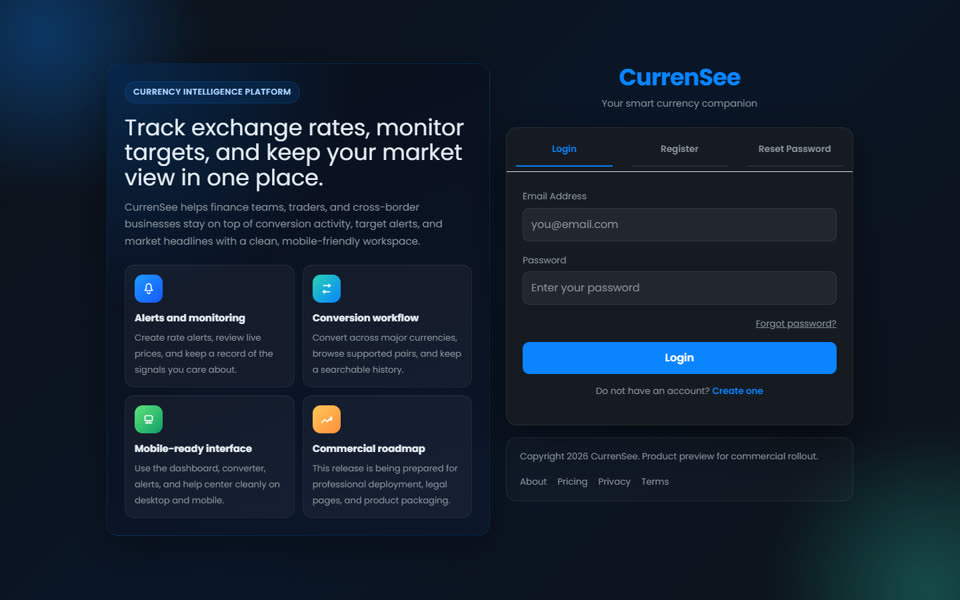
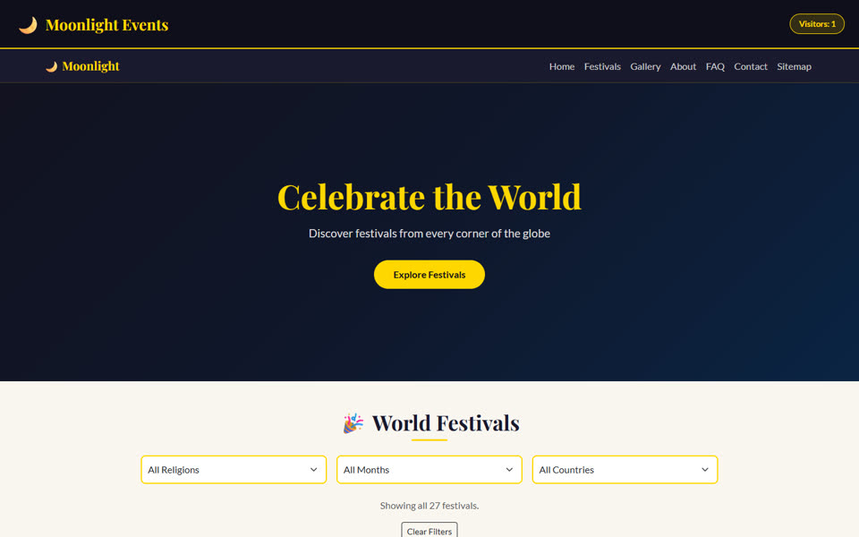
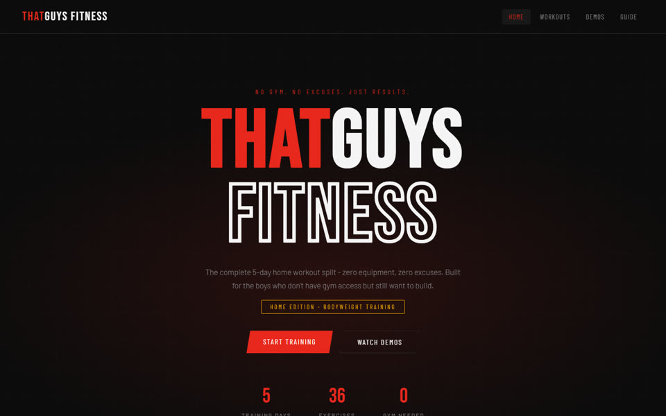
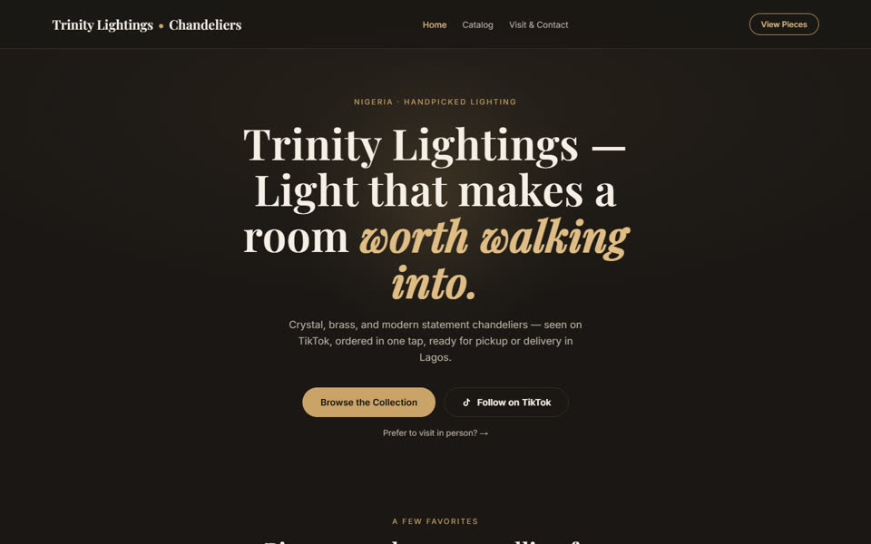

ABOSODION Farm
↗A farm-direct storefront for broilers, layers, and graded eggs, with a simple WhatsApp ordering flow.
FULL-STACK DEVELOPER / DIGITAL BUILDER
I build clear, practical web products for real people — from finance and housing tools to commerce and community platforms.



01 SELECTED WORK
A collection of products and experiences made to solve practical problems, tell a story, or make the next step easier.
A farm-direct storefront for broilers, layers, and graded eggs, with a simple WhatsApp ordering flow.

A currency intelligence workspace for monitoring rates, setting targets, and keeping conversion activity organized.

A global festival guide with quick filters for country, month, and tradition, built for curious browsing.
A Lagos rent and agent-fee reference that helps renters sanity-check a quote before committing.

A no-equipment, five-day bodyweight training experience with a direct, energetic visual identity.

A considered chandelier storefront that brings product discovery and local contact into one clear flow.
A global weather lookup that guides people from country to region with a simple, focused interface.
A campus-focused finance project. Its current cPanel preview is blank, so this card avoids linking to an exposed source directory.
! Campus Coin’s live preview needs repair before it can be linked publicly.
02 A LITTLE ABOUT ME
DI’m Daniel, a full-stack developer building practical digital products for people and businesses. My work spans finance, housing, commerce, community, and everyday tools — with a focus on useful flows and interfaces that feel considered.
From the first idea to the live experience, I care about making technology approachable, reliable, and ready for real use.
03 HAVE A PROJECT IN MIND?